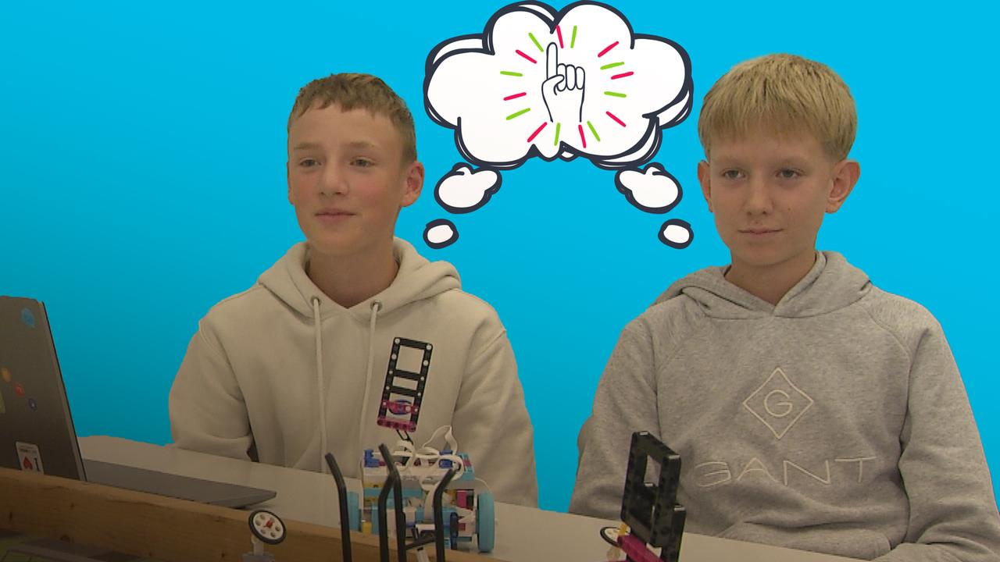
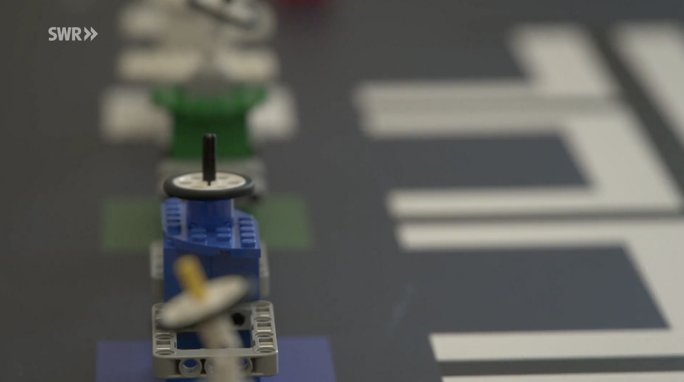

Elementary · 2025
World Robot Olympiad
Team 8-Bit
Together with my teammate Jonas, I developed an autonomous LEGO robot for the 2025 World Robot Olympiad, competing under the name "Team 8-Bit" in the Elementary category. After securing a second-place finish at the German National Championship, we qualified to represent Germany at the World Finals in Singapore, where we successfully placed 16th out of 98 international teams.
Thank you for the kind coverage:

© ZDF
View in the media library

© SWR
View in the media library